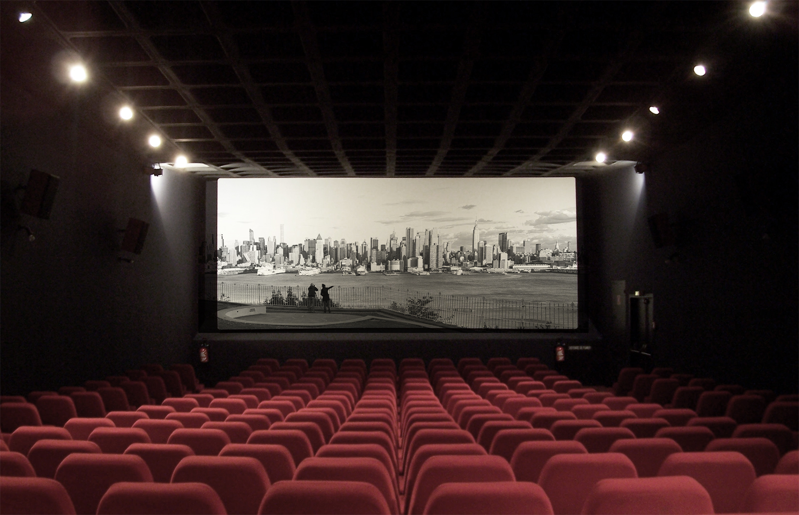

Os cinemas são espaços culturais dedicados à exibição de filmes. No Brasil, existem diversas redes que oferecem conforto, tecnologia e uma grande variedade de filmes.
Para mais informações sobre filmes em cartaz, visite o site:
AdoroCinema| Rede | Presença no Brasil | Recursos |
|---|---|---|
| Cinemark | Nacional | Salas XD, 3D, VIP |
| Cinépolis | Nacional | Salas 4DX, Macro XE |
| Kinoplex | Regiões Sul e Sudeste | Salas Platinum, 3D |